Density plots draw the kernel density estimate, a smoothed version of the histogram.
ggplot(www, aes(usage)) +geom_density()
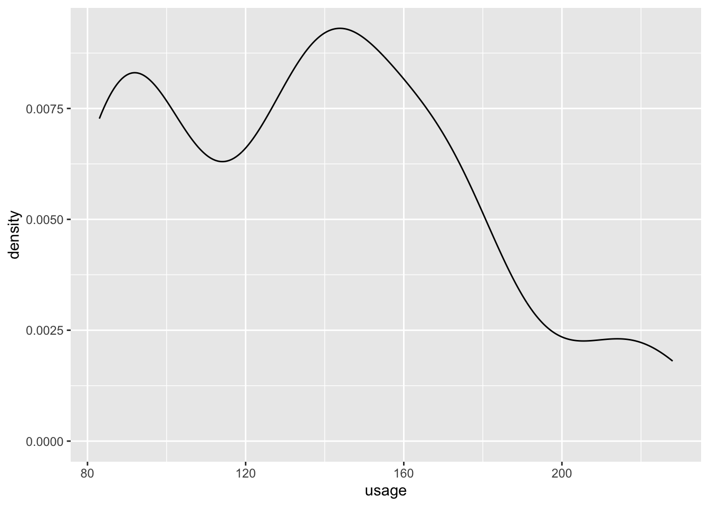
Dot plots are similar to histograms:
ggplot(www, aes(usage)) +geom_dotplot()
Bin width defaults to 1/30 of the range of the data. Pick better value with
`binwidth`.
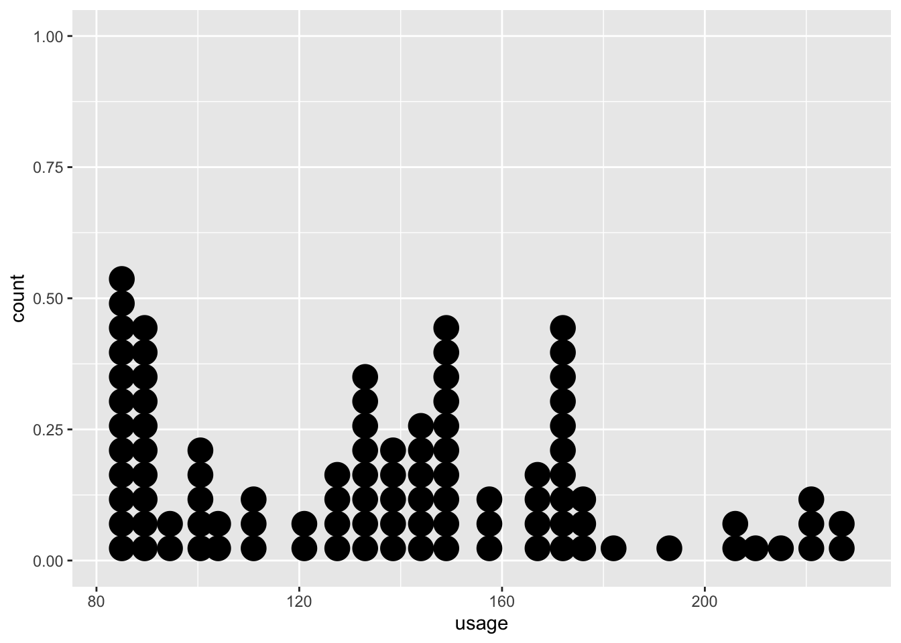
A QQ-plot, comparing the quartiles of the theoretical and sample distributions, shows if a sample follows a specific distribution:
ggplot(mtcars, aes(sample = mpg)) +geom_qq() +# or use stat_qqgeom_qq_line()
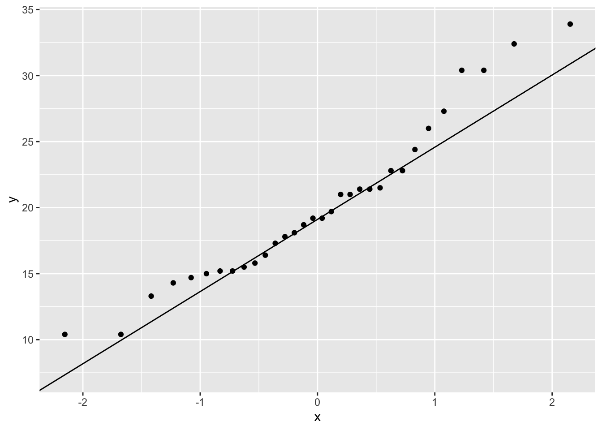
Discrete
Use a bar chart to display a single discrete variable. There are two ways to do this using ggplot:
Use geom_bar() to have ggplot calculate counts for you
# here, we make cyl into a factor so that the axis does not have continuous labels (ex. no 5 showing bc there are no cars w/ value 5)ggplot(mtcars, aes(x =as.factor(cyl))) +geom_bar()
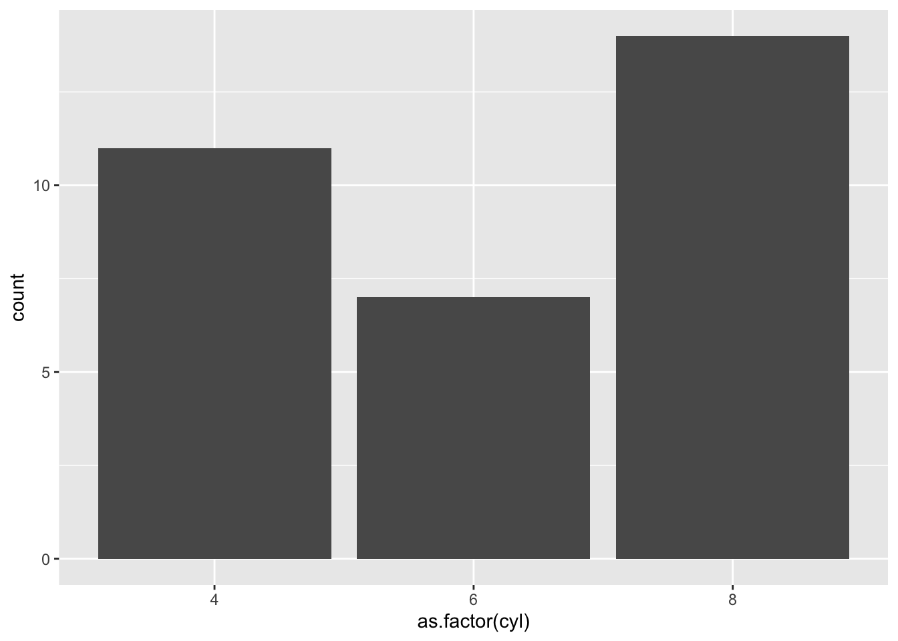
Use dplyr and geom_col() to summarize the data yourself
Fill changes the inside color of the geometry, and is primarily used with bar plots. Color changes the border of the geometry, and is used for scatterplots.
# setting fill does this: ggplot(mtcars_avg_mpg, aes(x =as.factor(cyl), y = avg_mpg,fill = cyl)) +geom_col()
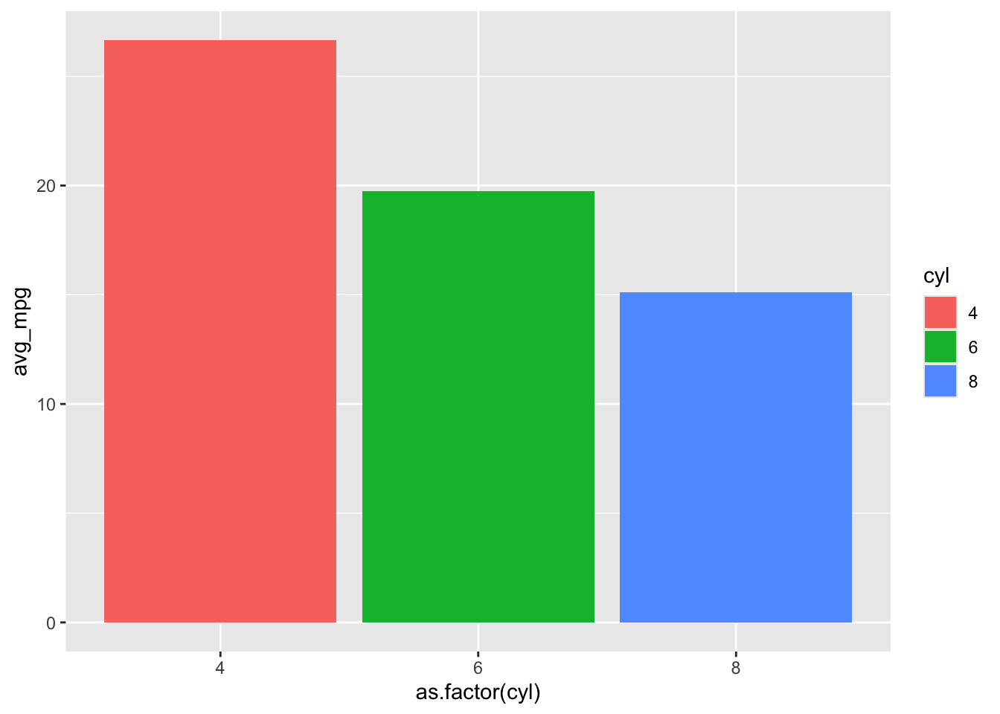
# whereas setting color does this: ggplot(mtcars_avg_mpg, aes(x =as.factor(cyl), y = avg_mpg,color = cyl)) +geom_col()
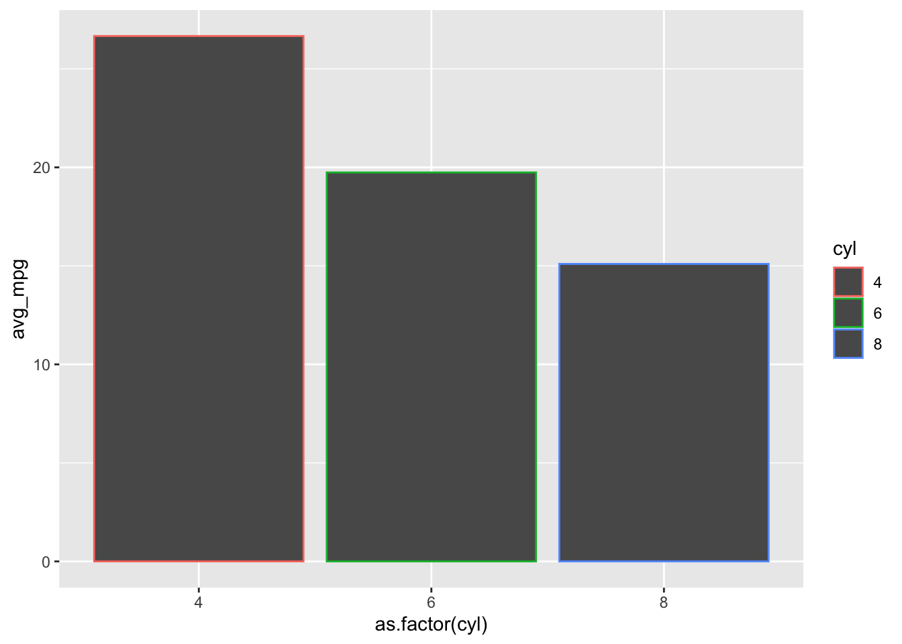
# scatterplot with fill:ggplot(mtcars, aes(x = wt, y = mpg, fill =as.factor(cyl))) +geom_point()
# scatterplot with color:ggplot(mtcars, aes(x = wt, y = mpg, color =as.factor(cyl))) +geom_point()
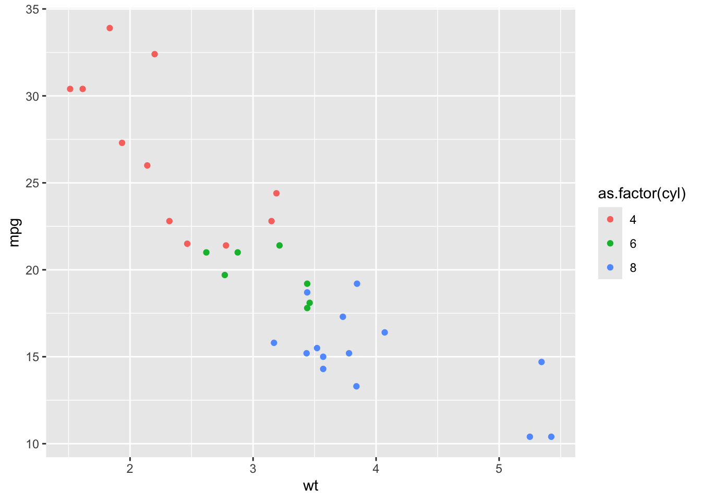
Size
Use size to change the size of geometries, such as scatterplot points.
Use the labs() function to adjust the labels on your plot. x and y allow you to change the axis labels, fill and other aesthetics change the legend label, and title, subtitle, and caption are useful for changing other labels
b <-ggplot(mtcars, aes(x =as.factor(cyl), group = am, fill =as.factor(am))) +geom_bar(position ="dodge")b
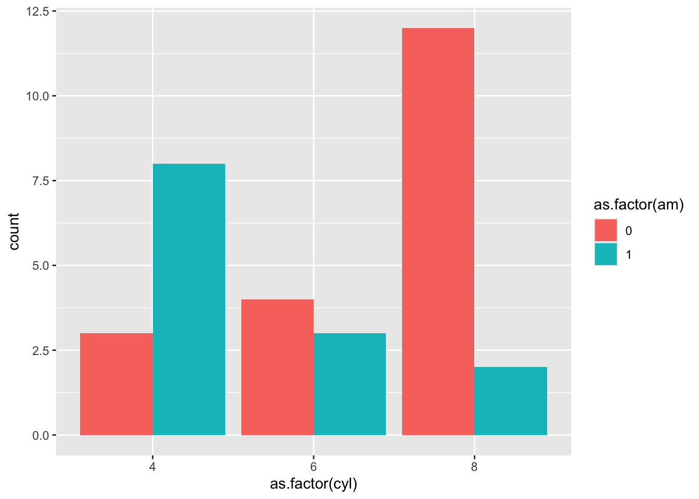
lbl <-labs(x ="Number of Cylinders", y ="Number of Cars",fill ="Transmission",title ="Cars by Cylinder Number and Transmission Type",subtitle ="Most cars are automatic and have 8 cylinders",caption ="Created by Bianca")b + lbl
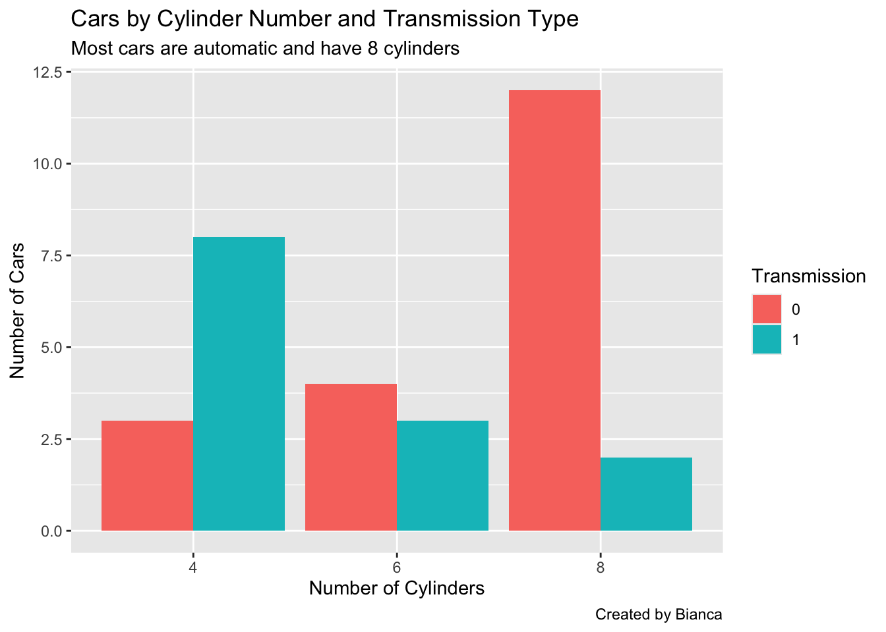
While this plot is an improvement, it is still not clear what the legend means. To fix this, we can also adjust the data itself to give the factor labels.
b2 <-ggplot(mtcars, aes(x =as.factor(cyl), group = am, fill =factor(am, levels =c(0, 1), labels =c("Automatic", "Manual")))) +geom_bar(position ="dodge") + lblb2
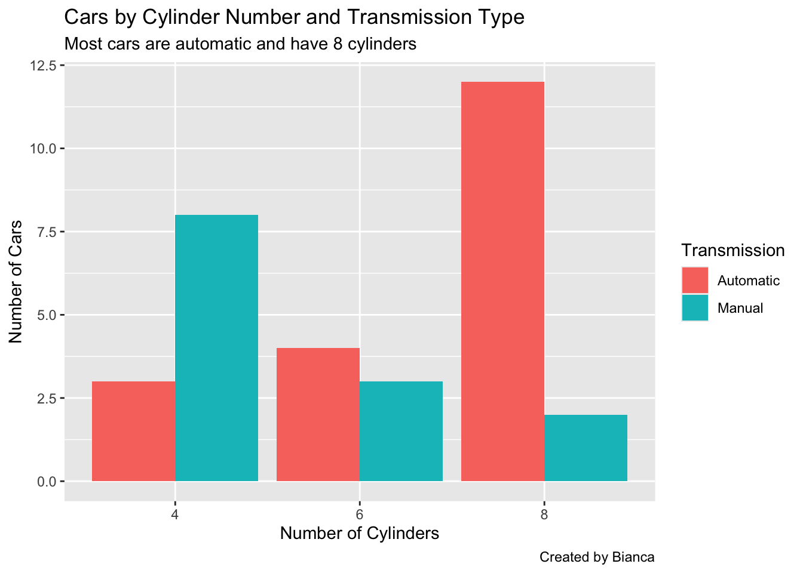
Themes
You can change the theme of your plot, including themes from base R and from ggthemes.
b2 +theme_bw()
b2 +theme_light()
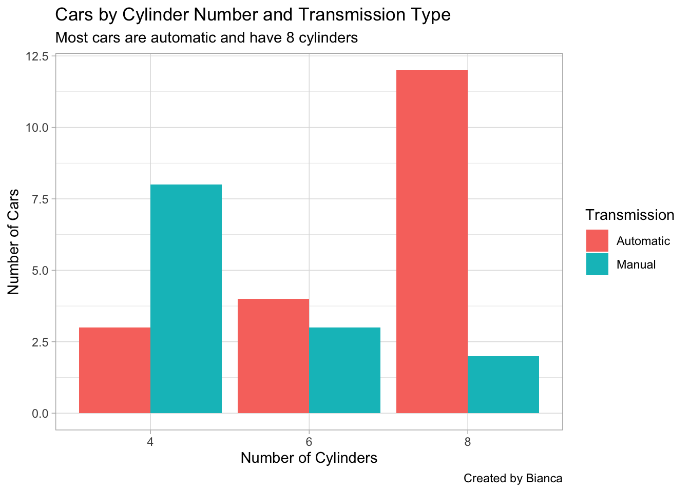
library(ggthemes) # there are also other themes from this package
Warning: package 'ggthemes' was built under R version 4.4.3
b2 + ggthemes::theme_tufte()
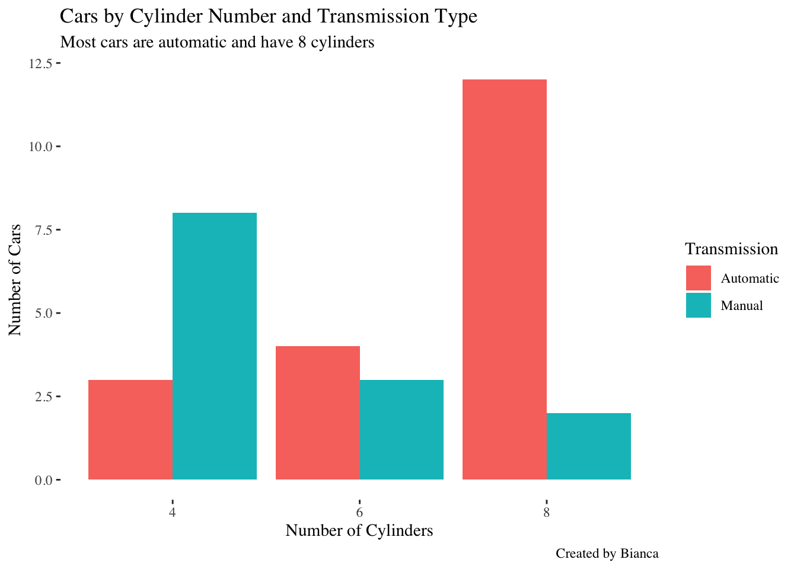
Color Palettes
Custom Colors
R has hundreds of named colors which can be accessed with colors() and you can also use any hex code like #FF0000. See this cheat sheet for more information about choosing colors.
s <-ggplot(mtcars, aes(x = wt, y = mpg, color =factor(am, levels =c(0, 1), labels =c("Automatic", "Manual")))) +geom_point() +labs(x ="Weight", y ="Miles Per Gallon", color ="Transmission")s +scale_color_manual(values =list('Automatic'="red", 'Manual'="blue"))
Options include rainbow(n), heat.colors(n), terrain.colors(n), topo.colors(n), and cm.colors(n)
b2 +scale_fill_manual(values =rainbow(n =2))
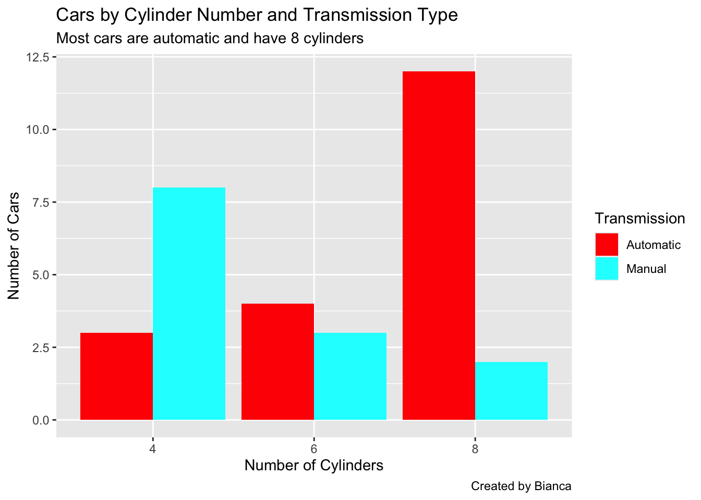
RColorBrewer
See the website for a list of all palettes. There are diverging palettes (good for ordinal color scales that range from negative to positive), sequential (for ordinal color scales), and qualitative (for data that is unordered).
library(nycflights13)ggplot(mtcars, aes(x = wt, y = mpg, color =as.factor(cyl))) +geom_point() +scale_color_brewer(palette ="RdPu") +# sequentiallabs(x ="Weight", y ="Miles Per Gallon", color ="Cylinders")
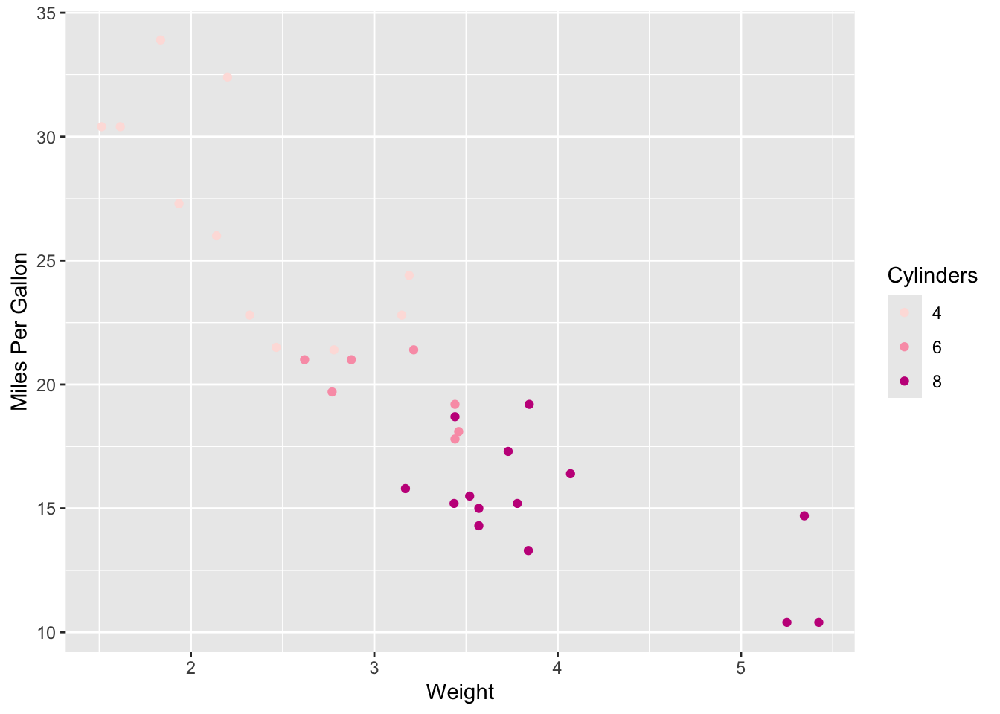
flights_monthly <- flights %>%drop_na() %>%filter(year ==2013) %>%mutate(delay_level =case_when(dep_delay >10~"Delay",between(dep_delay, -10, 10) ~"On Time", dep_delay <-10~"Early", .default =NA)) %>%group_by(month, delay_level) %>%count()ggplot(flights_monthly, aes(x =as.factor(month), y = n, fill =factor(delay_level, levels =c("Delay", "On Time", "Early")))) +geom_col(position ="fill") +scale_fill_brewer(palette ="RdYlGn") +labs(fill ="Type", y ="% of flights", x ="month")